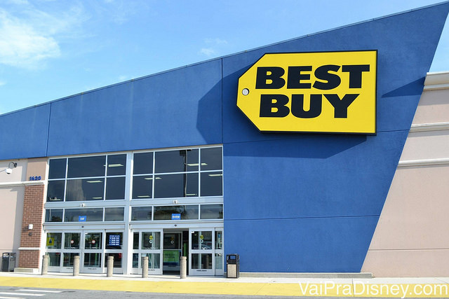

Lojas Recomendadas

The Loop: o complexo de compras de Kissimmee
Quando fui em Janeiro com a minha família para Orlando, uma garçonete muito gente boa do Buca di Beppo nos deu a dica do The Loop, onde ela que morava em Orlando há muitos anos, de fato fazia as suas compras.
Já tinha passado pelo The Loop algumas vezes, mas com exceção da gigantesca Best Buy que fica por lá, nunca tinha parado para conhecer melhor o local.
The Loop, um dos principais complexos de compras de Orlando e região
O The Loop não é um outlet, mas também não é um shopping center. Decidi chamá-lo de complexo de compras, que se estende por alguns quarteirões com grandes lojas espalhadas.
Esse complexo fica em Kissimee, ao sul de Orlando, um local onde muitos brasileiros escolhem se hospedar. O The Loop se divide em duas partes: The Loop e The Loop West.
Na realidade,os dois “shoppings The Loop” pertencem à duas empresas diferentes há muitos anos, mas somente em Agosto de 2014 eles decidiram separar a administração, então o site que antes era o mesmo agora só mostra as informações do The Loop West. Mas fiquem tranquilos que as lojas estão todas lá.
O fato de uma moradora de Orlando ter me indicado o The Loop, não significa que ele é escondido e que os turistas não estão por lá, pelo contrário, cada vez mais gente frequenta o local. Apesar de não ser um local de compras “escondido”, onde só você e poucos outros terá acesso às ofertas, o The Loop apresenta algumas grandes vantagens, como o fato de reunir no mesmo lugar algumas das principais lojas que os brasileiros procuram ao viajar para os EUA, como a Ross, Best Buy, Bed Bath and Beyond e por ai vai. Uma bela praticidade na hora de planejar sua rota de compras.
As lojas do The Loop
Entre os dois complexos, o The Loop West é mais tranquilo para estacionar o carro e caminhar por entre as lojas a pé, visto que elas ficam todas dispostas ao redor do estacionamento.
As principais lojas do The Loop West são:
- JCPenney: para quem busca uma loja no estilo “Mappin” e “Mesbla” (peguei pesado? hehe). Na verdade, a JCPenney é uma opção legal pra quem procura roupas e produtos para casa, mesa e banho por preços bem em conta. É uma das tradicionais e populares lojas de departamento dos EUA.
JCPenney, umas das lojas favoritas da minha mãe no The Loop
- TJMaxx: importante loja estilo “sacolão” exatamente como a Ross, porém menos conhecida pelos brasileiros. A TJMaxx algumas vezes oferece produtos melhores e levemente mais caros, pois traz coleções e peças de marcas e designers conhecidos. Mesmo assim, absurdamente abaixo das lojas, digamos, normais. Vale a pena conhecer se você tiver paciência para esse tipo de loja.
- Party City: não que eu frequente muito, mas bastante gente que nos visita acaba perguntando sobre a Party City, que é uma importante loja de artigos para festa dos EUA. Lá você encontra desde velas, bexigas e apitos até fantasias para adultos e crianças. Lá no The Loop West você encontra uma unidade.
Party City no The Loop – uma ótima recomendação pra quem vai no Halloween, encontrar fantasias
- Bath & Body Works: outra queridinha dos brasileiros, vende todo o tipo de cosmético de marca própria, que vai de álcool gel até perfume.
- Babies R Us: essa é para quem está a procura de produtos para o bebê e ideal para quem quer montar o seu enxoval em Orlando. Veja outras dicas sobre isso, clicando aqui.
O paraíso dos enxovais em Orlando no meio do The Loop
- GameStop: minha loja favorita de games em Orlando. Sou fã dos jogos usados e do atendimento descolado da rede. Muitas outras lojas são encontradas em qualquer canto da cidade.
- GNC: a cada vez mais famosa loja de suplementos alimentares, para os atletas de plantão. Eu como bom sedentário, passo longe

Vale mencionar que as opções de alimentação no The Loop West não são tão boas do que as do The Loop, que por sinal também não são aquela Brastemp.
Logo em frente ao The Loop West, do outro lado da estrada (tem faixa de pedestres de qualquer maneira), você encontra o The Loop, onde outras lojas bem conhecidas ficam localizadas. Lá você também encontra opções de atividades além das compras, como salas de cinema e algumas opções de comida, melhores do que as do The Loop West, como o Chilli’s e o Macaroni Grill.
As principais lojas do The Loop são:
- Best Buy: dispensa apresentações né? Simplesmente uma das melhores lojas para comprar eletrônicos dos EUA. Essa loja é uma das maiores da rede que já entrei e é bem menos lotada do que a unidade que fica em frente aoFlorida Mall.

- CVS: farmácia naquele estilo americano que é quase um supermercado, assim como o Wallgreens que já falamos por aqui.
- Ross Dress For Less: uma das mais populares lojas de ofertas onde você encontra roupas a preços inacreditáveis. Tem que ter disposição para caçar boas ofertas, mas já demos várias dicas aqui no site (clique aqui para ver).
- Sports Authority: outra gigante do varejo no segmento de artigos esportivos. É uma das maiores redes dos EUA e quem está a procura de produtos para a prática de esportes não pode deixar de ir.
- Michaels: sabe aquela papelaria que a gente gostava de ir antigamente? A Michaels é isso e muito mais. Vende todo o tipo de artigo escolar, produtos para artesanato e até uma seção bem grande pra quem gosta de montar scrapbook.
- Bed Bath and Beyond: tem absolutamente tudo para a sua casa, já falamos dela aqui e essa unidade é relativamente mais vazia.
- Petco: os apaixonados pelos seus bichinhos de estimação, não podem deixar de ir a esse gigantesco supermercado de artigos para os pets. Comprei um bichinho de pelúcia para a minha cachorrinha/sobrinha e foi $1 dólar (um parecido aqui no Brasil não saía por menos de 10 reais).
Petco, o paraíso para o seu animal de estimação
- Old Navy: eu gosto de dizer que a Old Navy é a C&A americana. Atire a primeira pedra quem nunca comprou muito lá! Eu gosto muito de lá, principalmente para roupas mais sossegadas, como pijamas, meias (são excelentes!) e camisas polo.
Cupons no The Loop
Com as mudanças societárias e de administração que mencionei acima, os cupons do The Loop desapareceram junto com o site do complexo. Por isso, para comprar aqui, você deve “caçar” os cupons de cada loja grande nos sites das marcas, como explicamos nessa outra matéria.

Bed Bath and Beyond a loja que nos faz ter vontade de morar de novo nos EUA para montar uma casa
Vale a pena ir até o The Loop?
Se você está procurando produtos que podem ser encontrados nas lojas acima, vale a pena sim. Especialmente se você considerar que as unidades das mesmas lojas que ficam no centro de Orlando, acabam sendo mais lotadas e tem menos estoque e variedade de produtos. Por isso, eu recomendo ir até o The Loop para dar uma pesquisada, se você tiver tempo em Orlando.
O endereço do complexo é 2001 W Osceola Parkway, Kissimmee, FL 34741 e pode levar de 10 a 30 minutos dirigindo, dependendo do ponto de Orlando que você está hospedado.
E que brasileiro que não curte a Ross Dress For Less? (entre nós , a Re! hehe)
Espero que tenham aproveitado as dicas e depois contem pra gente o que acharam do The Loop.